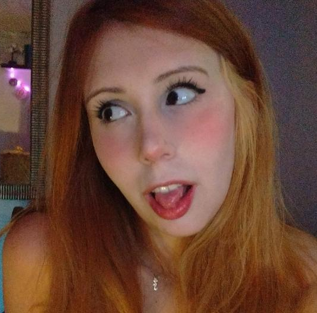
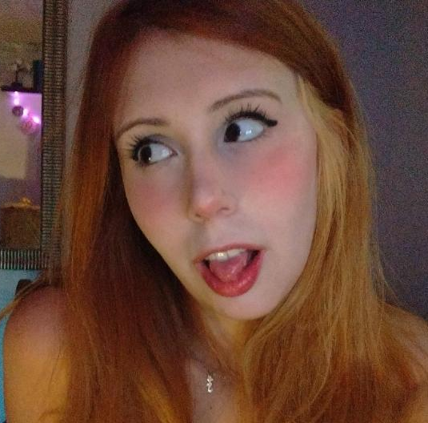

Um lugar perfeito para #boeiroLovers
Esse grupo é incrível, mudou minha vida, e de todos que participam dele,
e mais do que fotos de boeiros ele muda a visão que temos da cidade que vivemos
- Victor Buba
O grupo envolve muito sentimento, sabe? é muito mais do que só observar boeiros,
é conhecer nossa cidade, compartilhar o nosso olhar com o outro e ver a forma que
o outro enxerga os incríveis artefatos do chão

- Fabiana Ramos
Para mim boeiros tem memória, eles tem um poquinho de tudo
que há naquela região, posso não conhecer um lugar, mas só
de olhar seus boeiros, já consigo me sentir lá!
- Daniel Sprenger
A simples definição de boeiro nao fala da grandeza dele.
O boeiro conta a história de uma grande cidade. Sem os bueiros
a cidade não seria completa, muito menos funcional.
O grupo dos boeiros é uma das mais novas iniciativas criadas por joven
curitibanos que glorificam a sua cidade com a adoração a esse super herói silencioso,
que muitas vezes tomamos como algo certo e absoluto.

- Luiza Franceschi
Esse grupo é incrível, mudou minha vida, e de todos que participam dele, e mais do que fotos de boeiros ele muda a visão que temos da cidade que vivemos
- Victor Buba
O grupo envolve muito sentimento, sabe? é muito mais do que só observar boeiros, é conhecer nossa cidade, compartilhar o nosso olhar com o outro e ver a forma que o outro enxerga os incríveis artefatos do chão
- Fabiana Ramos
Para mim boeiros tem memória, eles tem um poquinho de tudo que há naquela região, posso não conhecer um lugar, mas só de olhar seus boeiros, já consigo me sentir lá!
- Daniel Sprenger
A simples definição de boeiro nao fala da grandeza dele. O boeiro conta a história de uma grande cidade. Sem os bueiros a cidade não seria completa, muito menos funcional. O grupo dos boeiros é uma das mais novas iniciativas criadas por joven curitibanos que glorificam a sua cidade com a adoração a esse super herói silencioso, que muitas vezes tomamos como algo certo e absoluto.
- Luiza Franceschi